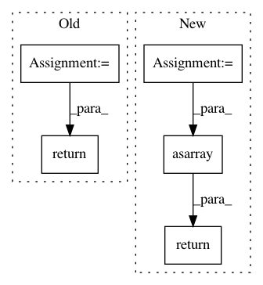

13d5b2195ca142550de258441394203212be54cd,astroML/datasets/sdss_sspp.py,,fetch_sdss_sspp,#,52
Before Change
hdulist = fits.open(archive_file)
data = np.asarray(hdulist[1].data)
if cleaned:
// -1.1 < FeH < 0.1
data = data[(data["FeH"] > -1.1) & (data["FeH"] < 0.1)]
// -0.03 < alpha/Fe < 0.57
data = data[(data["alphFe"] > -0.03) & (data["alphFe"] < 0.57)]
// 5000 < Teff < 6500
data = data[(data["Teff"] > 5000) & (data["Teff"] < 6500)]
// 3.5 < log(g) < 5
data = data[(data["logg"] > 3.5) & (data["logg"] < 5)]
// 0 < error for FeH < 0.1
data = data[(data["FeHErr"] > 0) & (data["FeHErr"] < 0.1)]
// 0 < error for alpha/Fe < 0.05
data = data[(data["alphFeErr"] > 0) & (data["alphFeErr"] < 0.05)]
// 15 < g mag < 18
data = data[(data["gpsf"] > 15) & (data["gpsf"] < 18)]
// abs(radVel) < 100 km/s
data = data[(abs(data["radVel"]) < 100)]
return data
After Change
data = Table.read(DATA_URL)
data.write(archive_file)
else:
data = Table.read(archive_file)
if cleaned:
// -1.1 < FeH < 0.1
data = data[(data["FeH"] > -1.1) & (data["FeH"] < 0.1)]
// -0.03 < alpha/Fe < 0.57
data = data[(data["alphFe"] > -0.03) & (data["alphFe"] < 0.57)]
// 5000 < Teff < 6500
data = data[(data["Teff"] > 5000) & (data["Teff"] < 6500)]
// 3.5 < log(g) < 5
data = data[(data["logg"] > 3.5) & (data["logg"] < 5)]
// 0 < error for FeH < 0.1
data = data[(data["FeHErr"] > 0) & (data["FeHErr"] < 0.1)]
// 0 < error for alpha/Fe < 0.05
data = data[(data["alphFeErr"] > 0) & (data["alphFeErr"] < 0.05)]
// 15 < g mag < 18
data = data[(data["gpsf"] > 15) & (data["gpsf"] < 18)]
// abs(radVel) < 100 km/s
data = data[(abs(data["radVel"]) < 100)]
return np.asarray(data)
In pattern: SUPERPATTERN
Frequency: 4
Non-data size: 5
Instances
Project Name: astroML/astroML
Commit Name: 13d5b2195ca142550de258441394203212be54cd
Time: 2019-04-16
Author: bsipocz@gmail.com
File Name: astroML/datasets/sdss_sspp.py
Class Name:
Method Name: fetch_sdss_sspp
Project Name: librosa/librosa
Commit Name: c8280cd73ec4782188ab1d8d4d7f4ce349a07f6a
Time: 2016-11-02
Author: brian.mcfee@nyu.edu
File Name: librosa/effects.py
Class Name:
Method Name: trim
Project Name: ellisdg/3DUnetCNN
Commit Name: e6a8a482f15803b24fc4bda6e2a0bd001ca77c87
Time: 2017-04-07
Author: david.ellis@unmc.edu
File Name: data.py
Class Name:
Method Name: read_subject_folder
Project Name: explosion/thinc
Commit Name: add867d6aa1c7437a62ce8ebda7339b6aae113a3
Time: 2019-06-11
Author: honnibal+gh@gmail.com
File Name: thinc/neural/_classes/multiheaded_attention.py
Class Name: MultiHeadedAttention
Method Name: begin_update